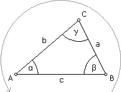
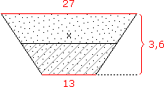
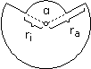
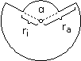
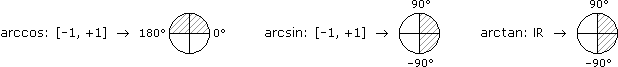

V. GEOMETRIE/TRIGONOMETRIE
A. Dreiecke
B. Spezielle Vierecke
C. Kreis und Bogenmaß
D. Spezielle Körper
E. Winkelfunktionen
F. Trigonometrie im rechtwinkeligen Dreieck
 Ergänzungen und Details
Ergänzungen und Details|  | Die Höhen ha, hb, hc stehen normal auf die jeweilige Seite und laufen zum gegenüberliegenden Eckpunkt. Wenn γ ein rechter Winkel ist und nur dann, heißen ... a, b = Katheten (schließen den rechten Winkel ein) c = Hypotenuse (liegt dem rechten Winkel gegenüber) |
2 Winkelsumme
• Im Inneren eines jeden Dreiecks ist die Winkelsumme = 180°.
Zum Beweis legen wir eine zur Grundlinie parallele Gerade durch den gegenüberliegenden Eckpunkt und betrachten die dadurch erzeugten Z-Winkel:
3 Flächenformeln
• Standard-Flächenformel: A =
chc
2
bhb
2
aha
2
Beweis:
A = + = =
A = – = =
xhc
2
yhc
2
(x + y)hc
2
chc
2
xhc
2
yhc
2
(x – y)hc
2
chc
2
• Heron'sche Flächenformel: A = √s(s – a)(s – b)(s – c) mit s(emi) = halber Umfang
Aufgabe 1: Eine Lampe hängt an 3,6 m und 2,7 m langen Kabeln, die an 6 m voneinander entfernten Masten auf gleicher Höhe befestigt sind. Wie weit hängt die Lampe durch?
s =
a + b + c
2
A = √s(s – a)(s – b)(s – c) = 2,85
A =  hc = = 0,95 m
hc = = 0,95 m
chc
2
hc = 2A
c
4 Kongruenz und Ähnlichkeit
Die Konstruktion mit Zirkel und Lineal zeigt, dass zwei Dreiecke kongruent (deckungsgleich) sind, falls a) eine Seite und alle Winkel gleich sind, b) zwei Seiten und der eingeschlossene Winkel oder der Gegenwinkel der längeren Seite, c) alle drei Seiten. Um ein Dreieck eindeutig zu bestimmen, genügen also drei unabhängige Bestimmungsstücke, außer im folgenden Fall:
• Zwei Dreiecke heißen ähnlich, falls alle Winkel gleich sind. In diesem Fall sagt der Ähnlichkeitssatz, dass das Verhältnis von zwei Seiten im einen Dreieck gleich dem Verhältnis der entsprechenden Seiten im anderen Dreieck ist.
Bem: Üblicherweise versteht man unter den Ähnlichkeits"sätzen", dass zwei Dreiecke ähnlich (formgleich) sind, falls a) alle Winkel gleich sind, b) alle Verhältnisse entsprechender Seiten, c) das Verhältnis zweier Seiten und der eingeschlossene Winkel oder der Gegenwinkel der längeren Seite.
Beweis:
AEDA = AEDB
AECA = ACDB a'ha
2
b'hb
2
a'
b'
hb
ha
Fläche des großen Dreiecks = = =
aha
2
bhb
2
a
b
hb
ha
a'
b'
a
b
Aufgabe 2: Wir nehmen einen rechten Winkel, wobei der eine Schenkel eine Skala hat und am Ende des anderen ein Schnurlot angebracht ist. Wie hoch ist ein Gebäude, das mit diesem "Gerät" wie folgt vermessen wird, wenn a = 14 cm, b = 20 cm, c = 25 m?
Die markierten Winkel sind gleich, weil ihre Schenkel normal aufeinander stehen (und der Winkel zwischen zwei Schenkeln gleich bleibt, wenn wir beide um 90° drehen). Wegen dem rechten Winkel und der Winkelsumme sind dann alle Winkel gleich. (Eine andere Argumentation wäre das "Z" aus Schnurlot, Visierlinie und Gebäudewand.)
x
c
a
b
x = ac
b
0,14·25
0,20
Den Ähnlichkeitssatz können wir umformen, sodass die Verhältnisbildung nicht mehr innerhalb eines Dreiecks stattfindet, sondern zwischen beiden Dreiecken (Strahlensatz):
a'
b'
a
b
a'
a
b'
b
Über Seiten hinaus verallgemeinert lässt sich das so formulieren, dass bei ähnlichen Dreiecken die Strecken im einen Dreieck proportional zu den entsprechenden Strecken im anderen Dreieck sind. Daher auch die Schreibweise Δ ∼ Δ' für ähnliche Dreiecke.
5 Satz von Pythagoras
• Sind a, b die Katheten und c die Hypotenuse eines rechtwinkeligen Dreiecks, dann gilt: a2 + b2 = c2
Beweis:
|
Das gegebene Dreieck mit Hypotenuse c legen wir viermal an ein Quadrat mit Seitenlänge c an. Wo sich die Dreiecke berühren, haben wir wegen der Winkelsumme 180°, was ein großes Quadrat ergibt mit der Fläche ...
(a + b)2 = c2 + 4
ab 2
a2 + 2ab + b2 = c2 + 2ab |–2ab
a2 + b2 = c2 |
Aufgabe 3: Eine Stahlkugel drückt gegen eine unelastische Fläche und hinterlässt eine Delle mit 48 mm Durchmesser und 6 mm Tiefe. Berechne den Radius der Kugel.
[Länge] = mm
r2 = (r – 6)2 + 242
r2 = r2 – 12r + 36 + 576 –r2 +12r :12
r = 51 mm
2 Trapez und Parallelogramm
Ein Trapez ist ein Viereck mit mindestens einem Paar paralleler Seiten, ein Parallelogramm hat zwei Paare paralleler Seiten.
• A =
ah
2
ch
2
(a + c)h
2
(a + a)ha
2
Bem:
a + c
2
Aufgabe 4: Ein Kanal hat ein gleichschenkeliges Trapez als Profil. Die Breite am Grund ist 13 m, auf dem Uferniveau 27 m und die Tiefe ist 3,6 m. Wie viel Prozent des Kanals sind mit Wasser gefüllt, wenn der Wasserspiegel auf halber Kanaltiefe liegt?

Akanal =
(13 + 27)3,6
2
x = = 20 Awasser = = 29,7
13 + 27
2
Awasser = (13 + 20)1,8
2
Aw
Ak
3 Deltoid
Ein Deltoid ist ein Viereck mit zwei Paaren gleich langer Nachbarseiten.
|
• A = ef 2 |
DrachenviereckPfeilviereck
Ein Rhombus (Raute) ist zugleich Trapez und Deltoid, ist also dadurch charakterisiert, dass alle Seiten gleich lang sind.
Aufgabe 5: Berechne den Inhalt der schraffierten Fläche, wenn a = 28 cm, b = 7 cm, e = 18 cm.
[Länge] = cm
f = √(a – b)2 + (a – b)2 = √2·212 = 29,7
A = ef
2
18· 29,7
2
|
Ein regelmäßiges n-Eck hat gleich lange Seiten und gleich große Winkel. Anders ausgedrückt: Es besteht aus kongruenten gleichschenkeligen Dreiecken mit gemeinsamer Spitze und 360°/n als Winkel dort. Dem Ähnlichkeitssatz zufolge ändert sich das Verhältnis von Umfang zu Durchmesser nicht, wenn wir das n-Eck verkleinern/vergrößern. Beim regelmäßigen ∞-Eck, dem Kreis, ergibt die Messung dieses Verhältnisses die Kreiszahl • π := 3,14159... |
|
Damit lautet die Formel für den Kreisumfang: • u = 2πr Die Kreisfläche setzen wir aus schmalen Dreiecken zusammen: • A = g1r 2 g2r 2 g3r 2 (g1 + g2 + g3 + …)r 2 ur 2 |
2 Kreissektor
Ein Kreissektor ("Tortenstück") wird durch ein Stück Kreisbogen und zwei Radien begrenzt. Für Bogenlänge und Fläche des Kreissektors nehmen wir die entsprechenden Kreisformeln und davon den Anteil, den der Winkel zwischen den Radien am vollen Winkel hat:
|
• b = 2πr α 360° • A = πr2 α 360° br 2 |
Aufgabe 6: Berechne Umfang und Flächeninhalt folgenden Blechschablone, wenn α = 135°, r1 = 24 mm, r2 = 46 mm.


[Länge] = mm
u = 2πri
α
360°
360° – α
360°
A = πri2
α
360°
360° – α
360°
3 Bogenmaß
Mit dem Bogenmaß definieren wir Winkel über Kreissektoren, so wie Steigung über Steigungsdreiecke:
• α :=
b
r
Das Bogenmaß soll das antike Gradmaß ablösen, also interpretieren wir das Gradsymbol kurzerhand als unären Operator und ebenso die Einheit rad (Radiant), die für das Bogenmaß verwendet wird, obwohl b/r eigentlich dimensionslos ist:
• o := ·
2π
360
1
57,3
Warum ist das Bogenmaß besser? Weil das Gradmaß willkürlicher ist und deswegen kompliziertere Formeln zur Folge hat:
b = α
2π
360°
α
360°
1
2
Aufgabe 7: Rechne Bogenmaß- und Gradzahlen ineinander um:
a) 0,89 rad = ? b) 43° = ? c) 5,55 rad = ? d) 216° = ?
a) 0,89 rad = ? b) 43° = ? c) 5,55 rad = ? d) 216° = ?
Wir merken uns den Umrechnungsfaktor 57,3 und dazu, dass derselbe Winkel kleine Radiant- und große Gradzahlen hat:
a) 0,89 rad = 51° b) 43° = 0,75 rad c) 5,55 rad = 318° d) 216° = 3,77 rad
Zylinder im weiten Sinn haben eine ebene Grundfläche, von deren Rand parallele und gleich lange Mantellinien zur ebenen Deckfläche laufen. Wenn die Mantellinien normal auf die Grundfläche stehen, sprechen wir von einem geraden Zylinder. Schiefe und gerade Zylinder, die in Grundfläche und Höhe übereinstimmen, haben auf jeder Höhenstufe dieselbe Querschnittsfläche und daher dasselbe Volumen (Prinzip von Cavalieri).
| • V = Gh |
Spezielle Zylinder:
Prisma = mit eckiger Grundfläche
Quader = mit rechteckiger Grundfläche und gerade
Zylinder (im engen Sinn) = mit runder Grundfläche
Drehzylinder = mit kreisförmiger Grundfläche und gerade
Aufgabe 8: Wie schwer ist ein Alu-Kochtopf (ρ = 2,7 g/cm3), der außen 14 cm Durchmesser und 8 cm Höhe aufweist und dessen Wand 2 mm und Boden 5 mm dick ist?
[Länge] = cm, [Masse] = g
V = πra2ha – πri2hi = π(72·8 – 6,82·7,5) = 142
ρ =
m
V
m = ρV = 383,4 g2 Kegel im weiten Sinn
Kegel im weiten Sinn haben eine ebene Grundfläche, von deren Rand die Mantellinien zu einer Spitze zusammenlaufen. Wenn die Grundfläche einen Mittelpunkt hat und die Spitze genau darüber liegt, sprechen wir von einem geraden Kegel. Für alle Kegel gilt, was für die 6 gleichen Pyramiden, in die ein Würfel zerfällt, unmittelbar klar ist: Kegel haben ein Drittel des Volumens, das ein Zylinder mit gleicher Grundfläche und Höhe hat.

|
• V = Gh 3 |
Spezielle Kegel:
Pyramide = mit eckiger Grundfläche
Kegel (im engen Sinn) = mit runder Grundfläche
Drehkegel = mit kreisförmiger Grundfläche und gerade
Aufgabe 9: a) Leite die Formel für die Mantelfläche des Drehkegels her und b) bestimme sein Volumen, wenn M = 64,4 cm2 und r = 2,5 cm.
Da die Spitze genau über dem Mittelpunkt der kreisförmigen Grundfläche liegt, haben alle Mantellinien dieselbe Länge s. Wenn wir den Mantel längs einer solchen Linie aufscheiden und aufrollen, erhalten wir daher einen Kreissektor mit Radius s:

|
a) M = "b"·"r" 2 2πrs 2 b) [Länge] = cm s = M πr h = √s2 – r2 = 7,8 V = πr2h 3 |
3 Kugel
Die Kugel wird – wie schon der Kreis, aber jetzt im Raum – durch die Punkte charakterisiert, die von einem vorgegebenen (Mittel)Punkt denselben Abstand haben. Über das Prinzip von Cavalieri sehen wir, dass eine Halbkugel dasselbe Volumen hat wie der umgeschriebene Drehzylinder ohne den eingeschriebenen Drehkegel:
Damit lautet die Formel für das Kugelvolumen:
|
Das Kugelvolumen können wir auch aus schmalen Pyramiden zusammensetzen: V = G1r 3 G2r 3 G3r 3 (G1 + G2 + G3 + …)r 3 Or 3 Und daraus die Kugeloberfläche freistellen: • O = 4πr2 |
Aufgabe 10: In eine 2,9 cm dicke Vollkugel aus erhitztem Glas werden 480 cm3 Hohlraum eingeblasen. Welche Oberfläche hat die neue Kugel?
[Länge] = cm
4
3
4
3
r2 = 4,9O = 4πr22 = 301,7 cm2
Der Einheitszeiger mit Fuß im Ursprung und Spitze auf der positiven x-Achse wird um den Winkel α gedreht – im Gegenuhrzeigersinn, falls α positiv ist, sonst andersrum: Das Bogenmaß von α ist dann die von der Zeigerspitze überstrichene Bogenlänge. Kosinus und Sinus sind die xy-Koordinaten der Zeigerspitze. Der Tangens ist die y-Koordinate, wo die Trägergerade des Zeigers die rechts anliegende Kreistangente schneidet.
Über den Ähnlichkeitssatz übertragen wir das auf Zeiger mit beliebiger Länge. Wenn wir zudem die Zeigerkoordinaten im ersten Quadranten als die dem Winkel anliegende und gegenüberliegende Kathete ansprechen, können wir uns vom Koordinatensystem lösen:
• cosα :=
rx
r
AK
H
• sinα :=
ry
r
GK
H
• tanα :=
ry
rx
GK
AK
Aufgabe 11: Drücke a) cosα, b) sinα, c) tanα, d) cosβ, e) sinβ, f) tanβ über die Seiten a, b, c aus:

a) cosα =
b
c
a
c
a
b
a
c
b
c
b
a
2 Zusammenhänge und Umkehrfunktionen
Dass Kosinus, Sinus und Tangens wie folgt zusammenhängen, können wir unmittelbar aus der Definition im Einheitskreis ablesen:
• cos2α + sin2α = 1
• tanα =
sinα
cosα
Die Arkusfunktionen liefern zu jedem Kosinus-, Sinus- und Tangenswert den zugehörigen Winkel aus folgendem Bereich:

Bisher waren die Bestimmungsstücke des Dreiecks rechnerisch zwei getrennte Welten: Seiten konnte man nur aus Seiten errechnen und Winkel nur aus Winkel. Unter Trigonometrie versteht man Dreiecksberechnungen mit Winkelfunktionen, die eine Brücke zwischen diesen Welten schlagen.
Aufgabe 12: Eine 5 m lange Leiter lehnt so gegen eine Hauswand, dass ihre Füße 1,8 m von der Hauswand entfernt sind. Die Sicherheitsvorschriften für Anlegeleitern verlangen, dass der Winkel zur Horizontalen zwischen 65° und 75° liegt. Ist das der Fall?
|
Wir setzen uns auf den gesuchten Winkel und identifizieren die gegebenen Seiten als AK und H. Dann fragen wir uns, welche Winkelfunktion AK und H verknüpft: cosα = AK H 1,8 5 α = arccos0,36 = 68,9° Leiter steht vorschriftsgemäß
|
Bem: In der Praxis stellt man sich seitwärts zum Fuß der Leiter und schaut, ob der waagrecht ausgestreckte Ellenbogen gerade die Leiter berührt.
Aufgabe 13: Ein Lichtstrahl fällt unter dem Einfallswinkel α = 48° auf eine 12 mm dicke Glasplatte und dringt unter dem Ausfallswinkel β = 32° in das Glas ein. Beim Austritt dreht sich der Vorgang um, sodass der Lichstrahl wieder dieselbe Richtung hat. Um wie viel mm wurde er parallel versetzt?
Hinweis: Ein/Ausfallswinkel werden zum Lot hin gemessen (das dort, wo der Strahl das Medium wechselt, normal auf die Grenzfläche steht).
Hinweis: Ein/Ausfallswinkel werden zum Lot hin gemessen (das dort, wo der Strahl das Medium wechselt, normal auf die Grenzfläche steht).
|
[Länge] = mm Im schraffierten Dreieck ist genügend bekannt ist, um es vollständig zu berechnen. Wir starten daher dort und hangeln uns über die gemeinsame Seite ins punktierte Dreieck: |
Aufgabe 14: Auf einer Turmspitze steht eine 3 m hohe Fahnenstange. Ein Beobachter sieht die Turmspitze unter dem Höhenwinkel α = 36,9° und die Fahnenstange unter dem Sehwinkel β = 1,3°. Wie weit ist er vom Turm entfernt?
Hinweis: Höhen/Tiefenwinkel werden von der Horizontalen aus nach oben/unten gemessen. Sehwinkel liegen zwischen den Strahlen, die vom Auge zu den gegenüberliegenden Enden eines Objekts führen.
Hinweis: Höhen/Tiefenwinkel werden von der Horizontalen aus nach oben/unten gemessen. Sehwinkel liegen zwischen den Strahlen, die vom Auge zu den gegenüberliegenden Enden eines Objekts führen.
|
Da in keinem Dreieck genügend bekannt ist, um es vollständig zu berechnen, braucht es ein Gleichungssystem: |